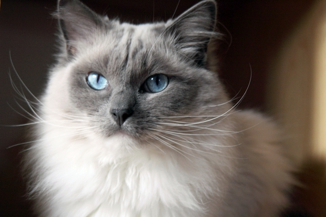
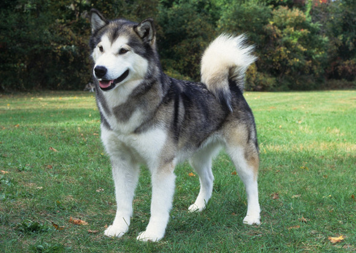

|
Sally Sally is a three-month old female Silver Tabby kitten with a very sweet disposition. She is very docile and would make an excellent companion for any family. |
 |
CarmileCarmile is a lovely little male Beagle puppy. At just four months old, he is incredibly playful and is great around other dogs! |
|  |
SophiaSophia is a beautiful female Ragdoll with a playful nature. She is a little shy but warms up to people when shown a little love. |
|  |
RexxRexx is a playful one year-old male Siberian Husky. He loves going on runs and getting brushed daily. He is in need of a little house training but his adventurous spirit truly makes him "man's best friend"! |